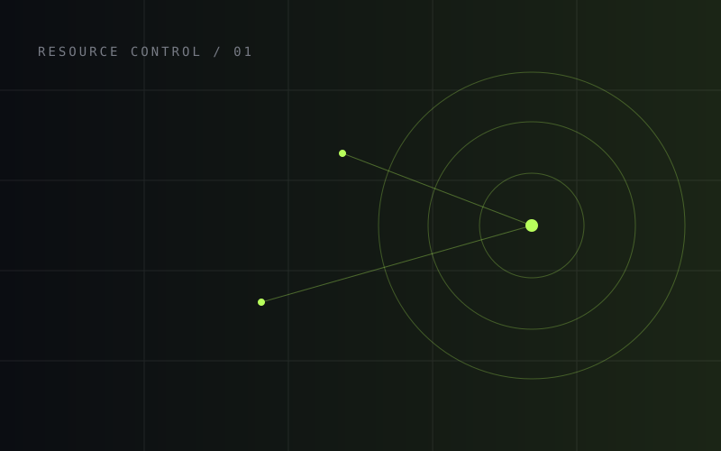
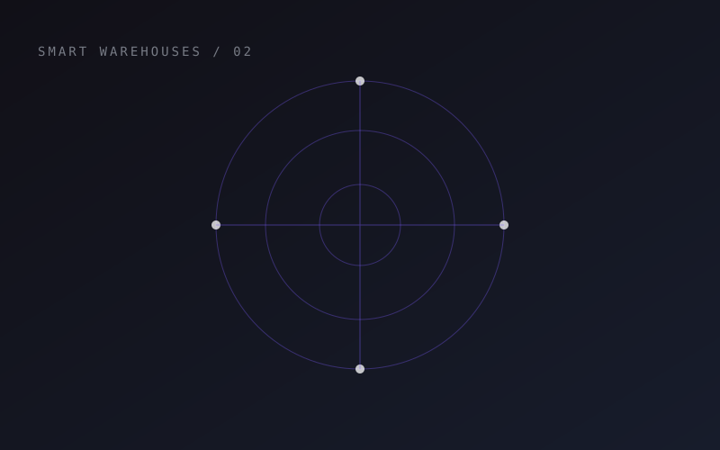
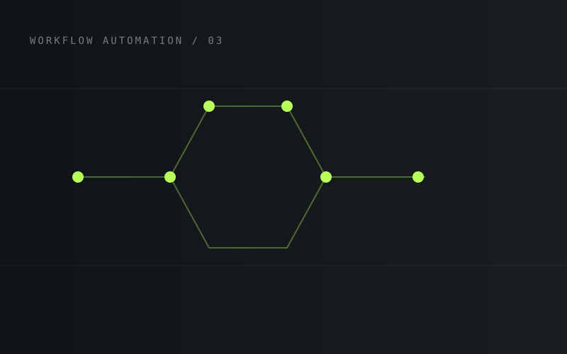
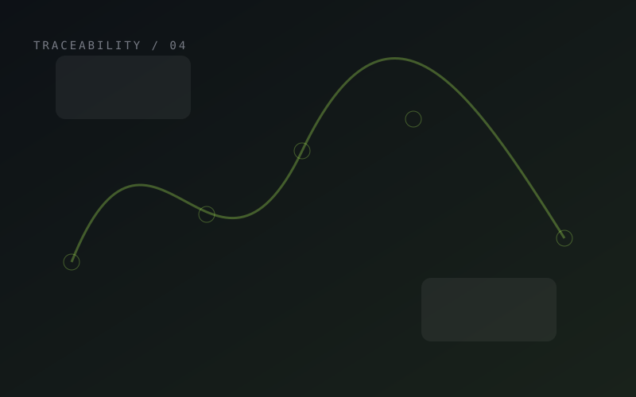
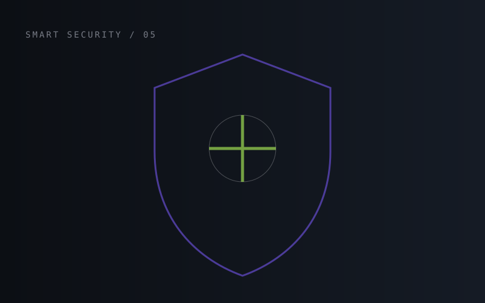

01Industrial Systems
Petrotalin Resource Control
A resource-control solution designed to bring operational visibility, structured workflows and reliable control into a complex industrial environment.
I'm Farhad Bagherlo, a software engineer with 18+ years of hands-on development experience, focused on reliable backend systems, APIs, data and modern .NET solutions.
const engineer = {
name: "Farhad Bagherlo",
experience: "18+ years",
focus: "Backend & Distributed Systems",
stack: [
".NET", "C#",
"Redis", "Docker"
],
mindset: "Build. Learn. Improve."
};Systems and products built around automation, data, traceability, security and operational efficiency.

01A resource-control solution designed to bring operational visibility, structured workflows and reliable control into a complex industrial environment.

02Analysis of fragmented warehouse data to turn disconnected operational records into useful, decision-ready insights.

03Automation of permit-issuance workflows, reducing manual steps and creating a more consistent process from request to approval.

04End-to-end tracking of goods across sales and production processes, improving visibility across the product lifecycle.

05A smart security platform focused on connected monitoring, event handling and a dependable home-security experience.
A production-facing digital platform presented as part of my professional portfolio and engineering work.
A customer-facing application included as a live product reference in my portfolio.
From classic web development to modern distributed systems.
My engineering journey started with web development and evolved through C#, ASP.NET, SQL Server, JavaScript and frontend technologies into modern backend engineering with .NET, ASP.NET Core, EF Core, Redis, messaging, Docker and cloud-ready architectures.
I enjoy solving the hard parts: architecture, performance, data consistency, integrations, caching, security and building systems that remain maintainable as they grow.
View my Stack Overflow profile ↗A practical toolkit built around backend engineering, data and reliable distributed applications.
C# · .NET · .NET Core · ASP.NET Core · Web API · EF Core · MediatR
SQL Server · Oracle · Redis · Query optimization · Data modeling · Caching
Clean Architecture · Distributed Systems · Messaging · Authentication · Rate Limiting
Docker · Linux · RabbitMQ · Git · CI/CD · Observability · Production APIs
Have a project, technical challenge or collaboration in mind?